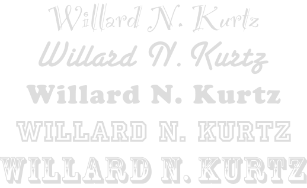
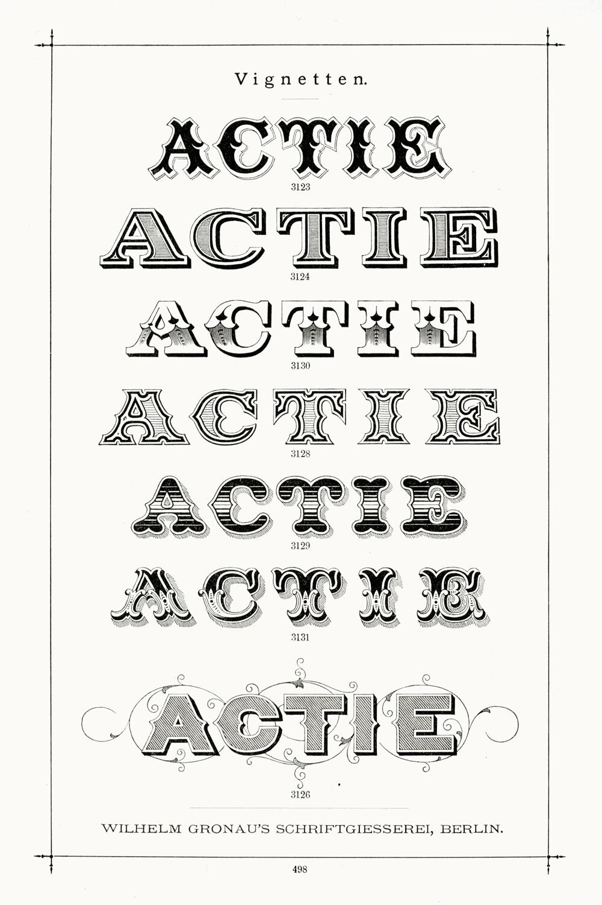

I once met a lawyer who had set his letterhead in a font called Stencil:
Who were his target clients? Army-surplus stores? He explained that he wanted something distinctive.
Distinctive is fine. Goofy is not.

From the top: no, no, no, no, and hell no.
Novelty fonts, script fonts, handwriting fonts, circus fonts—these have no place in any document created by a professional writer. Save them for your next career as a designer of breakfast-cereal boxes.
Don’t misunderstand—I completely believe in the power of a font to make an impression. Some of these fonts might be useful in a sign or a billboard, where the goal is to attract attention using limited space. But in a document that invites the patience and attention of a reader, a goofy font is as subtle as a jackhammer in a library. And equally unwelcome.
If you think we live in the golden age of goofy fonts—not even close. Typefounders of the 19th century did it all (and more, and better).
